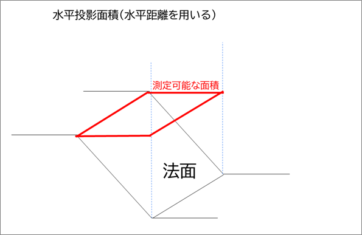
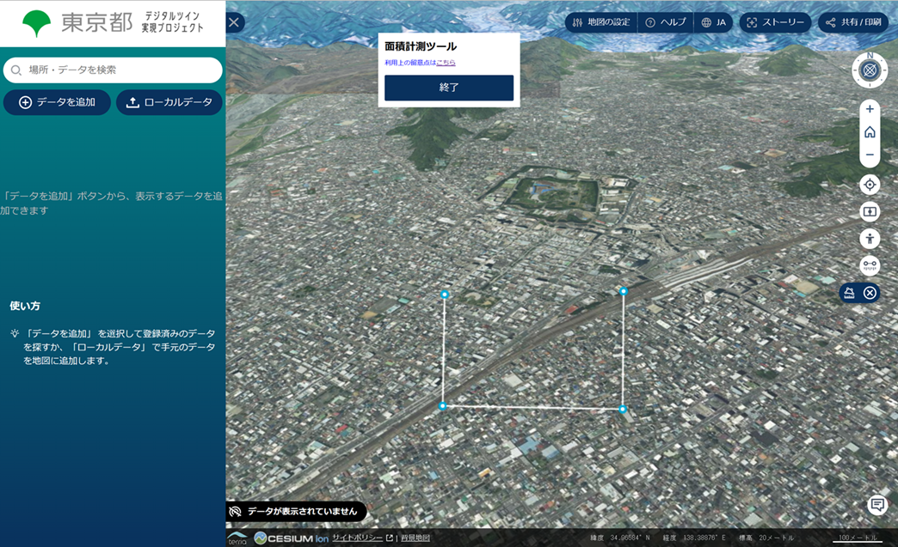
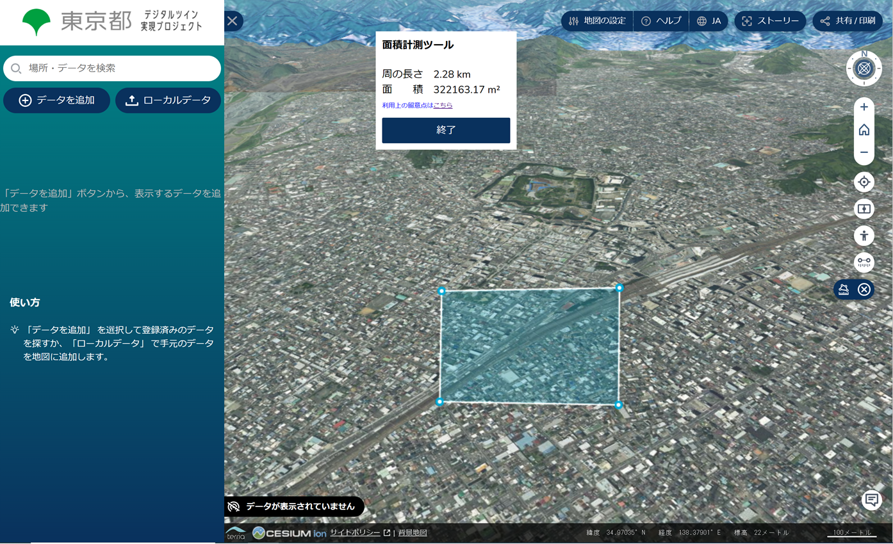

面積計測機能利用上の留意点
1. 面積測定範囲
本ツールでは、水平投影面積を計測します。
水平投影面積とは、土地や建物を真上から見たときの面積を指します。土地や建物に凸凹や斜面の部分があったとしても、その土地や建物が水平であるとみなして計測を行います。

2. 計測方法
2-1. ビューア上（地形の沿った地表面）の点を選択し、計測したいエリアを囲みます。

2-2. 計測したいエリアを点で囲んだ後、始点（最初に選択した点）を選択すると、選択した点に囲まれたエリアが青色で表示され当該エリアの面積及び周の長さが表示されます。
- 線が交差する場合、面積計測ができずエラーとなります。

2-3. 「終了」ボタンをクリックし、面積計測を終了します。
3. 注意事項
- 縮尺を拡大すると選択点が表示されず面積計測が行えない場合があります。選択点が表示されない場合は、縮尺を縮小してください。
- スマートフォンで面積計測を行う場合、2Dモードを推奨します（３Dモードでは、線や計測エリアの表示がうまく行われない場合があります）。
- 地表面のみ計測が可能です（地下部分の計測は不可）。